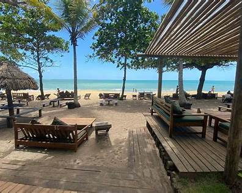
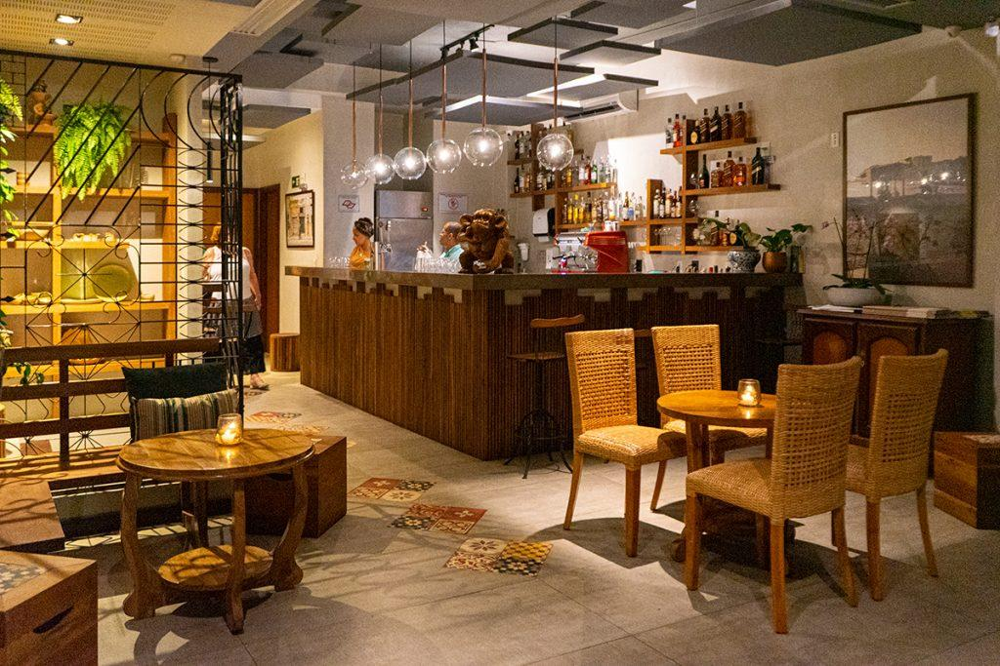
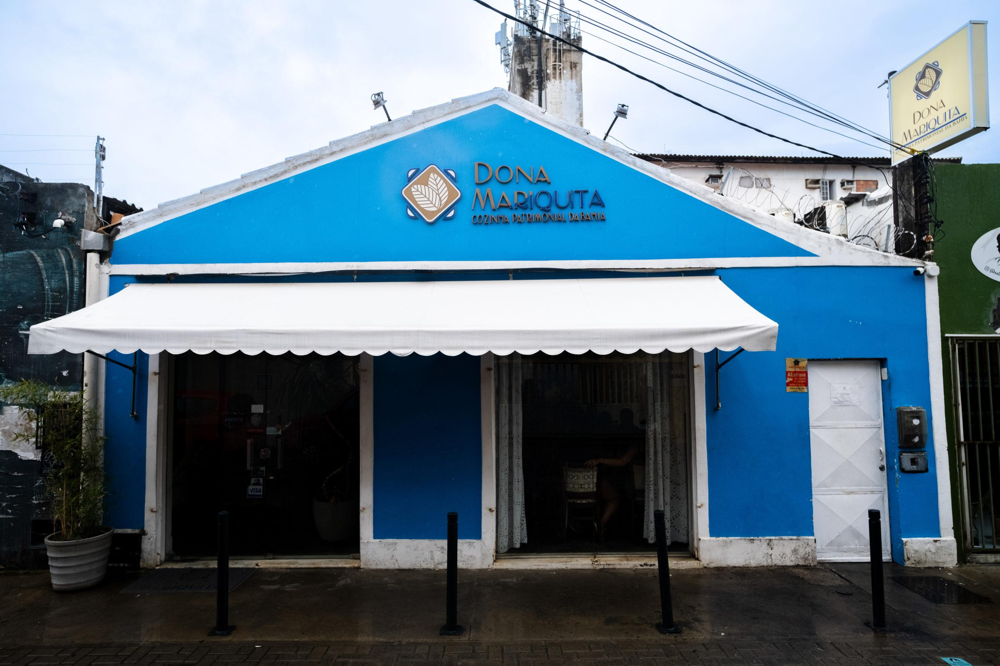
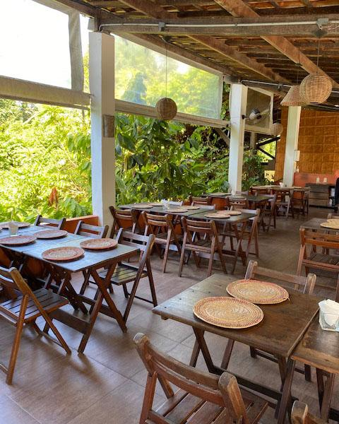
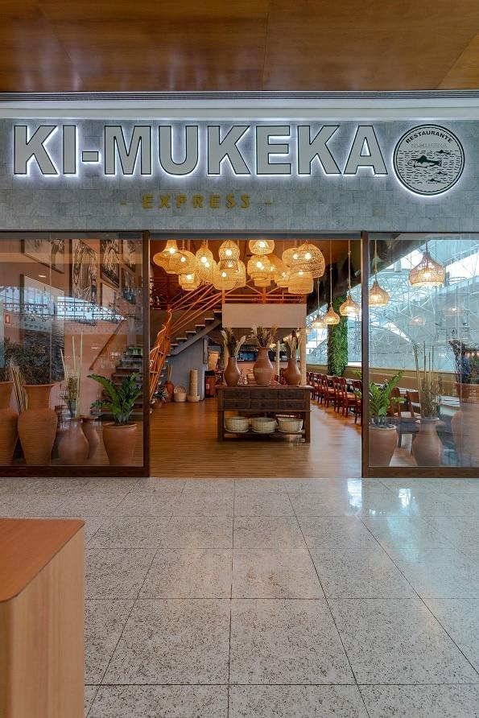
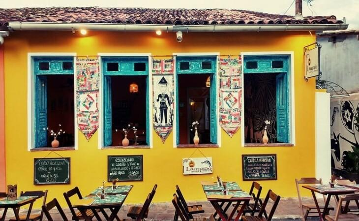

Culinária de terreiro
Restaurante voltado à tradição afro-baiana, inspirado nas comidas de terreiro do candomblé, com pratos cheios de história, ancestralidade e sabores típicos da Bahia.
Restaurante voltado à tradição afro-baiana, inspirado nas comidas de terreiro do candomblé, com pratos cheios de história, ancestralidade e sabores típicos da Bahia.

Restaurante com ambiente acolhedor e proposta regional contemporânea, valorizando ingredientes nordestinos e a cultura baiana em pratos criativos.

Restaurante tradicional da Bahia, com alimentos ligados a frutos do mar, moquecas e clima praiano “pé na areia.”

Conceito gastronômico focado na culinária regional baiana, destacando temperos típicos, receitas tradicionais e ingredientes locais.

Um dos restaurantes culturais mais famosos de Salvador, reconhecido por preservar receitas afro-baianas e pratos históricos do Recôncavo.

Restaurante icônico que mistura culinária baiana contemporânea com ingredientes exóticos brasileiros e forte identidade cultural.

Referência em moquecas e frutos do mar em Salvador, famoso pelo sabor marcante e pela experiência típica baiana.

Restaurante/café da Chapada Diamantina que une culinária regional, ambiente artístico e elementos da cultura sertaneja baiana.